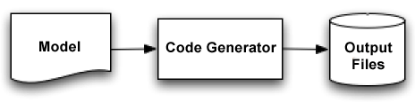
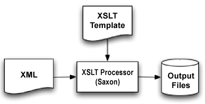

Code generation is a key new trend in engineering, one that you need
to understand well. The reason is simple: today's modern frameworks are
extremely code-intensive. Using a code generator to build the code for
you can save you a lot of time, both in writing the code and fixing the
inevitable bugs that spring from swathes of hand-written code.
There are a number of code generation options for Java development.
These range from canned solutions that generate whole applications
(e.g. Compuware's OptimalJ), to open source generators (e.g. XDoclet), to custom-built solutions. This article focuses on using XSLT to build custom generators. More information about XSLT is presented below.
Building a custom generator is an easy, fun, and cheap (free) way to
understand how generation works. With a new understanding about code
generation in hand, you will be able to evaluate off-the-shelf tools as
well as have the ability to write something yourself.
Let's start with the basics of code generation.
The Basics
Code generation is using one application to build code for another
application. In this case, XSLT will be our generator application.
Input for a code generator can come in many forms (source code,
database schemas, XML models, etc.). Regardless of the source, we call
the input the model because it represents (models) what is to
be built. On the other side are the templates. The templates render the
model into code, or other artifacts such as documentation. Figure 1
illustrates this process.
 Figure 1. Flow chart for basic XSLT-based code generation
There are two types of code generation: passive and active. In the
passive model, you generate the code once and then tweak it. In the
active model, you generate the code continuously (often as part of a
build process). As changes to the model are made, the generator will be
run and new code is created.
It's easy to think about how to use code generation on new projects
that build new code, but what about existing an code base? We all love
new code, but most of us get paid to work on old code. Is there a way
we can use code generation to aid us in extending and maintaining
existing applications?
The Problem
There are several problems with applying code generation to existing
code bases. You may have custom homebrew APIs that need custom work.
These APIs may have an inconsistent interface, which makes coding to
them difficult. You may have, as is often the case, a bunch of classes
that could probably be generated, but have small changes required for
each case. Some examples would be custom error-checking or validation
within the class, or cross-dependency special cases where two classes
depend on each other in a unique on-off way.
With either legacy code or new code, the problem with code
generation often comes down to, "Can you generate 100 percent of the
code, or only 90 percent? And if only 90 percent, then what happens to
that other 10 percent?" There are two basic solutions: the first is
generate partial classes. These are base classes that you can then
subclass to build custom behaviors. A second option is to generate code
with safe zones. When you want to extend the functionality
you add your code into these safe zones and it will be preserved
between generation cycles.
Before we get into the specifics, we should step back for a second
to give a general overview of code-generation basics to bring you up to
speed.
Subclassing Solution
We start with the input model that will be used for both generators. This model is copied from an article on IOM-based generation by Giuseppe Naccarato.
There are two important structures, the Class tag, which contains enough information to create a single class, and the Association tag, which creates a connection between two classes. In the example case, we are creating two classes, Customer and Order, and associating them. One Customer can have multiple Orders.
Each class tag has some sub-tags and attributes that define it in more detail. For example, the attribute tags in the Order
class specify that there should be both a number and a date on the
order. In addition there should be an operation (a method) called getTotalAmount that takes a value-added tax Boolean as a parameter. The model doesn't specify what getTotalAmount
should do, that's up to us as engineers to fill in. We do that either
by subclassing, or by adding code into a safe zone, as we will see.
The next step is to use XSLT to generate Java source code files from
the model. An XSLT template is an XML file that contains both
processing directives and template output. You need an XSLT processor
(such as Michael Kay's excellent Saxon
XSLT processor) to take the XML and the XSLT as input and to create one
or more files as output. The flow is illustrated in Figure 2.
 Figure 2. Flow for Saxon-based XSLT code generation
Our XSLT template file is called main.xsl. Note that the
excerpts in this article have some line breaks added for web-page
formatting -- part two of this series will have downloadable source, in
which you can examine the original formatting. At any rate, main.xsl starts with a little preamble:
Because we are generating Java source code (and not XML), we set the output mode to text.
The next thing to do is write a template that matches the root node
of the XML input tree. This template will build a file for each of the
Java class tags:
<!-- The main template loops over all of the
classes and creates a file for each one -->
<xsl:template match="/">
<xsl:for-each select="Content/Class">
<xsl:variable name="filename"
select="concat('output/',@name,'Base.java')" />
<xsl:message>Creating
<xsl:value-of select="$filename" /></xsl:message>
<xsl:document href="{$filename}" method="text">
<xsl:call-template name="java-class">
<xsl:with-param name="class" select="." />
<xsl:with-param name="associations"
select="/Content" />
</xsl:call-template>
</xsl:document>
</xsl:for-each>
</xsl:template>
The first for-each statement iterates over all of the class tags. The variable statement then builds the file name for the Java class file. The call-template tag then invokes a template that will build the Java to go in the file.
Now that we are cycling over the model to pick out the classes and
to build the Java files, we need to build the actual contents. That is
handled in the next template block:
<!-- The main template for a Java class -->
<xsl:template name="java-class">
<xsl:param name="class" />
<xsl:param name="associations" />
/* This file has been generated */
import java.util.*;
public class <xsl:value-of select="$class/@name" />Base {
Here you can start to see the beginnings of the Java class. The highlighted part is where we put in the name of the class.
The next step is to build the attributes:
<!-- Builds the attributes -->
<xsl:for-each select="$class/Attribute">
<xsl:if test="@type='integer'">
private int <xsl:value-of select="@name" />;
public int get<xsl:value-of select="@name" />()
{return this.<xsl:value-of select="@name" />;}
public void set<xsl:value-of select="@name" />
(int <xsl:value-of select="@name" />)
{this.<xsl:value-of select="@name" />=<xsl:value-of select="@name" />;}
</xsl:if>
<xsl:if test="@type='date'">
private Date <xsl:value-of select="@name" />;
public Date get<xsl:value-of select="@name" />()
{return this.<xsl:value-of select="@name" />;}
public void set<xsl:value-of select="@name" />
(Date <xsl:value-of select="@name" />)
{this.<xsl:value-of select="@name" />=<xsl:value-of select="@name" />;}
</xsl:if>
</xsl:for-each>
It looks pretty hairy, but it's really quite simple. The for-each statement iterates through all of the attributes, and the if statement checks for various types of attributes. The code within the if builds the right methods for each data type.
XSLT has a reputation for being very complex and verbose. I can't
agree with the complexity part, but it does score heavily in the
verbosity department, as this section shows. My recommendation to any
XSLT programmer is to get an editor to help with the grunt work. I use oXygen.
It has excellent intellisense for XSLT and with version 4.0, it now
includes an XSLT debugger. Suffice it to say, with the right tools,
XSLT can be a joy.
Back to the task at hand, the next segment deals with the associations:
This is pretty complex, but it boils down to iterating through all
of the associations in the model, then finding out if any are relevant
to this class. If they are, then we build a little code to add the
associated fields into the class and create some accessors for them.
The final segment builds the operations of the class:
<!-- Builds the operations -->
<xsl:for-each select="$class/Operation">
public <xsl:value-of select="concat( @returnType, ' ', @name)" />
( <xsl:call-template name="operation-params">
<xsl:with-param name="operation" select="." />
</xsl:call-template> ) {
<xsl:variable name="zoneid"
select="concat( $class/@name, '-', @name)" />
<xsl:if test="@returnType='double'">return 0.0;</xsl:if>
}
</xsl:for-each>
}
</xsl:template>
<!-- A helper template to build the parameters
for an operation -->
<xsl:template name="operation-params">
<xsl:param name="operation" />
<xsl:for-each select="Parameter">
<xsl:value-of select="concat( @type, ' ', @name )"/>
</xsl:for-each>
</xsl:template>
</xsl:stylesheet>
The XSLT code iterates through the operations and builds a stub
method for each. The little helper template just makes it easier to
build comma-separated lists of arguments.
To apply the template to the input file, we run the following at the command prompt:
/* This file has been generated */
import java.util.*;
public class OrderBase {
private int number;
public int getnumber() {return this.number;}
public void setnumber(int number) {this.number=number;}
private Date date;
public Date getdate() {return this.date;}
public void setdate(Date date) {this.date=date;}
private Customer customer;
public Customer getCustomer() {return this.customer;}
public void setCustomer(Customer customer ) {this.customer=customer;}
public double getTotalAmount( boolean calculateVAT ) {
return 0.0;
}
}
Not a work of beauty, by any means. But that has less to do with the
technology and more to do with the brevity and lack of tuning in the
template. In your templates you should add JavaDoc and error checking,
and try and keep the formatting as clean as possible.
Let's step back to take a look at the big picture. The class that
was generated is suitable for subclassing. In fact, the example will
not compile because Customer has not yet been implemented, only CustomerBase has. So we must implement a derived class, if only to get the system to compile!
Next Time: Safe Zones
The other approach to extending generated code is through the use of
safe zones. In part two of this series, we'll look at what safe zones
are and jump through some hoops to get them to work.
Jack Herrington is a software engineer with over twenty years of experience on numerous platforms and languages.
Learn More About XSLT
If you are still hesitant about XSLT, consider that there is a
three-fold benefit of learning the XSLT you will need to use the
techniques in this article. First, you will be learning a valuable tool
for converting XML from one form to another, or into a web page, or
into text. Second, you will be learning the related XPath technology,
which is a very powerful system for specifying nodes in a tree. And
last, you will have learned the functional programming model, which is
at the heart of XSLT.
For more information about XSLT I recommend that you read Michael
Kay's "XSLT: For Programmers." It is a great introduction to XSLT from
someone who is a key leader in the field.
Are you ready to start using code-generation techniques?
Showing messages 1 through 29 of 29.
Some xsl wrong?
2004-06-28 09:08:14
[Reply | View]
Nothing is wrong with the XSL. It works as shown.
Data Model is more important
2004-05-16 06:27:01 ragsvasan
[Reply | View]
I believe one has to pay more attention to the data model before
venturing into writing a generator. Many a times the model is already
fixed and you are working with/around its deficiencies. Only a few
times you are lucky to define your own, and can't pass up the
opportunity to come up with YAML (yet another markup language). I have
not had much success in defining a manageable ML. I would like to see
some articles on this topic.
I hav been using code genration methods for several of my projects.
There is one major issue I found with using XSLT, which is mixing your
output producing code with the parse logic. There isn't an easy way to
visualize how your output will look like. You spend a lot of time
adjusting the formatting and fixing trivial bugs. Maintenance of this
code over the lifetime of the project becomes progressively more
difficult.
I found greater success with a template driven strategy like Velocity or better yet perl template-toolkit .
Your data parsing code aand output generation code are cleanly separate
and you now have the option of choosing different tools for each.
Maintenance is simplified and the code ages well over the lifetime.
When XSLT first came out, I was aall over it using it exclusively. Now I avoid it completely.
I agree with another poster - Jakarta Velocity is a great way to code generate. XSLT is not something that is nice to learn.
Velocity v XSLT
2004-05-16 04:35:37 toren03
[Reply | View]
I think the main gain of using xslt would be if the source is xml, but
otherwise I 've gone the velocity route as well. Velocity has only a
handful of commands and is quite flexible with passing parameters.
A situation where xslt might be useful would be the following: The code
parameter are stored in a database and therefore you could you retrieve
the query as xml (as with the oracle classes) and immediately apply an
xsl file upon the result set.
Some xsl wrong?
2004-05-13 18:51:17 marsj
[Reply | View]
Is there any thing wrong with
<xsl:stylesheet
xmlns:xsl="http://www.w3.org/1999/XSL/Transform"
version="1.1">
declare and
<xsl:document /> element.?
If I am right, please fix it.
Some xsl wrong?
2004-06-28 09:08:20 jherr
[Reply | View]
Nothing is wrong with the XSL. It works as shown.
velocity works too!
2004-05-13 04:23:13 marsj
[Reply | View]
we had done the same work, not for Java class but for JSP page. Apache's velocity is also a good choise.
velocity works too!
2004-05-17 06:25:52 jeanluc
[Reply | View]
Check out JAG.SOURCEFORGE.NET ....
see also the DocBook
2004-05-12 04:30:34 felipegaucho
[Reply | View]
The DocBook is the next step in the book publishing area, code documentation and XML data tranport. And 100% related to XSLT
check it out !
just scratches the surface
2004-05-11 15:03:11 larsona
[Reply | View]
See www.codegeneration.net for many more articles, code-generators, etc.
just scratches the surface
2004-05-11 17:15:31 jherr
[Reply | View]
Thanks for the plug. Yeah, CGN is the place to go for the rest of the
story (until, of course, the next part of this article.) ;-)
I cannt open the browser 127.0.0.1:8080/egen (error: page cannt
disply)and 127.0.1.1:8080/egen(error: gateway time out and server is
unreachable) where i am using tomcat 1.4.29 and jdk 1.4.2..
PLZ HELP ME!!! what to do to open the e-Gen browser....